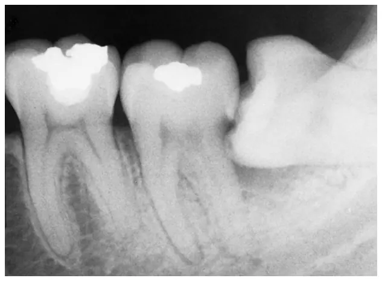
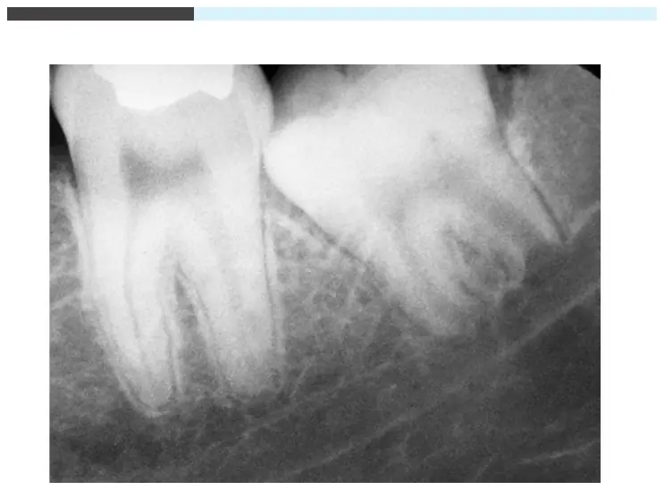

نسخه استخراجشده؛ ترجمه یا تأیید علمی انجام نشده است. وضعیت: captured
دندان نهفته دندانی است که در بازهی زمانی معمول انتظار، بهطور کامل داخل قوس دندانی رویش نمییابد. علتش میتواند جهتگیری غیرطبیعی دندان، دندانهای مجاور، استخوان متراکم روی آن، بافت نرم بیش از حد، یا ناهنجاری ژنتیک باشد.

و نکتهای که تصمیم را میسازد: چون دندان نهفته رویش نمییابد، تا آخر عمر بیمار در جای خود میماند، مگر جراحی خارج یا اکسپوز شود، یا بافت روی آن تحلیل برود. اصطلاح «دندان رویشنیافته» هم دندان نهفته را شامل میشود و هم دندانی را که در حال تشکیل و رویش است.
شایعترین علت: طول ناکافی قوس دندانی — یعنی مجموع طول قوس استخوان آلوئولار از مجموع طول قوس دندانها کوچکتر است.
ترتیب شیوع: مولر سوم ماگزیلا و مندیبل شایعتریناند، سپس کانین ماگزیلا و بعد پرمولر مندیبل. مولرهای سوم بیشترین شیوع را دارند چون آخرین دندانهایی هستند که رویش مییابند، پس بیشترین احتمال کمبود فضا را دارند.
کانین ماگزیلا معمولاً پس از لترال و پرمولر اول رویش مییابد؛ اگر فضا نباشد یا نهفته میشود یا لبیال به قوس درمیآید. در مندیبل هم پرمولرها پس از مولر اول و کانین میآیند، پس اگر فضا نباشد معمولاً پرمولر دوم نهفته میماند یا به سمت باکال یا لینگوال میرود.
مکانیسم اختصاصی مولر سوم پایین: در رشد طبیعی، مولر سوم پایین از زاویهی افقی شروع میکند و با رشد دندان و فک، زاویه از افقی به مزیوانگولار و سپس عمودی تغییر میکند. شکست چرخش از مزیوانگولار به عمودی، شایعترین علت نهفته شدن مولر سوم پایین است. عامل دوم، نسبت بعد مزیودیستال دندانها به طول فک است، طوری که فضای کافی جلوی لبهی قدامی راموس نمیماند.
و شاید مهمترین عامل: باید فضای کافی میان لبهی قدامی راموس و مولر دوم وجود داشته باشد. شاهد گویای این عامل: بسیاری از همین دندانها رویش مییابند — هرچند معمولاً با تیلت مزیالی — اگر مولر دوم مجاور در حین رشد مولر سوم از دست برود.
سن متوسط تکمیل رویش طبیعی مولر سوم ۲۰ سالگی است، هرچند در بعضی بیماران رویش تا ۲۵ سالگی ادامه مییابد — بهویژه در مردان.

پروفایل دندانی که دیر رویش مییابد: معمولاً فقط با بافت نرم یا کمی استخوان پوشیده است، تقریباً همیشه در وضعیت عمودی است، نسبتاً سطحی نسبت به پلن اکلوزال مولر دوم قرار دارد، و تکمیل تشکیل ریشهاش دیر است.
و پروفایل دندانی که رویش نخواهد یافت: اگر مولر سوم پایین پس از ۲۰ سالگی رویش نیافت، بهاحتمال زیاد با استخوان پوشیده است، احتمالاً نهفتگی مزیوانگولار است، و پایینتر در زائدهی آلوئولار نزدیک تراز سرویکال مولر دوم قرار دارد. دندانپزشک میتواند با همین پارامترها پیشبینی کند دندان به قوس میآید یا نهفته میماند.
عدد کلیدی: زمان ایدهآل برداشتن مولر سوم نهفته وقتی است که ریشهها یکسوم تشکیل شده باشند و پیش از آنکه دوسوم شوند — که معمولاً در اواسط تا اواخر نوجوانی، بین ۱۶ تا ۲۰ سالگی رخ میدهد.
چهار دلیل برای برداشتن زودهنگام:
قاعدهی کلی و هزینهی تأخیر: همهی دندانهای نهفته باید برداشته شوند مگر برداشتنشان کنترااندیکه باشد. و دندانپزشک معمولاً نباید توصیه کند نهفته را تا وقتی مشکلساز شود سر جایش بگذارند. اگر تا بروز مشکل صبر شود: بروز بیشتر موربیدیتی بافت موضعی، از دست رفتن یا آسیب دندانها و استخوان مجاور، و آسیب احتمالی به ساختارهای حیاتی مجاور. و اگر برداشتن به سنین بالاتر موکول شود، جراحی احتمالاً پیچیدهتر و پرخطرتر میشود: بیمار ممکن است بیماریهای سیستمیک پیدا کند، استخوان اطراف متراکمتر میشود، و ریشههای کاملتر نزدیک ساختارهایی مثل عصب آلوئولار تحتانی یا سینوس ماگزیلا رشد میکنند.
نوع سؤال: ساخت کلمه · 5 خانه
حروف منبع: ا · د · م · ن · ر